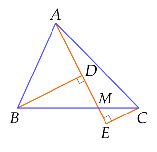

Câu 11. Đại số
Phần I — Trắc nghiệm chọn một phương án
0,19 điểm
Hùng có dự định bỏ $5\,100\,000$ đồng để mua một cây đàn Guitar. Hiện tại Hùng đã có $\dfrac{1}{3}$ số tiền đó. Hùng quyết định phát tờ rơi để kiếm đủ số tiền còn lại. Biết để kiếm vừa đủ số tiền còn lại Hùng phải làm trong $x$ giờ. Biểu thức nào sau đây biểu thị số tiền Hùng nhận được cho mỗi giờ làm việc?
Câu 13. Đại số
Phần II — Trắc nghiệm đúng hoặc sai
0,76 điểm
Trong đợt quyên góp sách ủng hộ các bạn vùng lũ miền trung, số sách quyên góp được của ba lớp $7A$ , $7B$ , $7C$ lần lượt tỉ lệ với $16$ ; $13$ ; $12$ . Lớp $7A$ quyên góp nhiều hơn lớp $7C$ là $12$ quyển. Gọi số sách quyên góp được của ba lớp $7A$ , $7B$ , $7C$ lần lượt là $x;\,y;\,z$ (quyển).
(Nhấp vào ô màu vàng để chọn đúng / sai)
Mỗi ý a), b), c)… là một phát biểu độc lập: nhấp vào ô để chọn Đúng/Sai,
0,19 điểm mỗi ý.
Câu 14. Hình họcCó vẽ hình
Phần II — Trắc nghiệm đúng hoặc sai
0,76 điểm
Cho tam giác $ABC$ , các góc $B$ và $C$ nhọn. Điểm $M$ nằm trên đoạn $BC$ . Vẽ $BD$ và $CE$ vuông góc với $AM$ ( $D, E$ thuộc $AM$ ).

Gọi $d$ là tổng các khoảng cách từ $B$ và $C$ đến đường thẳng $AM$ .
(Nhấp vào ô màu vàng để chọn đúng / sai)
Mỗi ý a), b), c)… là một phát biểu độc lập: nhấp vào ô để chọn Đúng/Sai,
0,19 điểm mỗi ý.
Câu 15. Đại số
Phần III — Trắc nghiệm trả lời ngắn
0,39 điểm
Lúc ban đầu ba kho có tất cả $710$ tấn thóc. Sau khi bán đi $\dfrac{1}{5}$ số thóc ở kho I, $\dfrac{1}{6}$ số thóc ở kho II và $\dfrac{1}{11}$ số thóc ở kho III thì số thóc còn lại ở ba kho bằng nhau. Lúc đầu kho II có bao nhiêu tấn thóc?
Trả lời ngắn — gõ kết quả, kèm đơn vị nếu đề hỏi đơn vị.
Câu 16. Đại số
Phần III — Trắc nghiệm trả lời ngắn
0,39 điểm
Có bao nhiêu cặp số $x$ và $y$ thỏa mãn $\dfrac{5x-1}{3}=\dfrac{7y-6}{5}=\dfrac{5x+7y-7}{4x}$ ?
Trả lời ngắn — gõ kết quả, kèm đơn vị nếu đề hỏi đơn vị.
Câu 17. Hình họcKhông vẽ hình
Phần III — Trắc nghiệm trả lời ngắn
0,39 điểm
Cho tam giác $RSK$ có $RS=8$ cm, $SK=1$ cm, biết độ dài cạnh $RK$ là một số nguyên. Chu vi tam giác $RSK$ là bao nhiêu cm?
Trả lời ngắn — gõ kết quả, kèm đơn vị nếu đề hỏi đơn vị.
Câu 18. Đại số
Phần III — Trắc nghiệm trả lời ngắn
0,39 điểm
Tính giá trị biểu thức $M=(x^5+y^5-x^2y^2)(x+y)-1$ biết $x+y=0$ .
Trả lời ngắn — gõ kết quả, kèm đơn vị nếu đề hỏi đơn vị.
Câu 19. Đại số
Phần IV — Tự luận
1,55 điểm
Tìm $x,y,z$ biết rằng: $\dfrac{{{\left( x-1 \right)}^{3}}}{27}=\dfrac{{{\left( y-2 \right)}^{3}}}{8}=\dfrac{{{\left( z-3 \right)}^{3}}}{64}$ và $x-2y+3z=28.$
Bài làm của bạn:
Câu 20. Đại số
Phần IV — Tự luận
1,55 điểm
Bà Minh đã mua $10$ quả dưa gồm $2$ loại. Loại I giá $90$ nghìn đồng một quả, loại II giá $60$ nghìn đồng một quả. Bà Minh đã mua bao nhiêu quả dưa loại I và bao nhiêu quả dưa loại II? Biết rằng số tiền bà Minh mua mỗi loại quả dưa là như nhau.
Bài làm của bạn:
Câu 21. Hình họcKhông vẽ hình
Phần IV — Tự luận
1,54 điểm
Cho tam giác $ABC$ cân tại $A$ , cạnh đáy lớn hơn cạnh bên. Qua điểm $D$ nằm giữa $B$ và $C$ vẽ 1 đường thẳng cắt cạnh $AB$ tại $M$ ( $M$ nằm giữa $A$ và $B$ ); cắt tia đối của tia $CA$ tại $N$ .
a) So sánh $\widehat{B}$ với $60°$ .
b) Chứng minh $MD>MB$ .
c) Trong tam giác $BMD$ , cạnh nào có độ dài lớn nhất?
Bài làm của bạn: